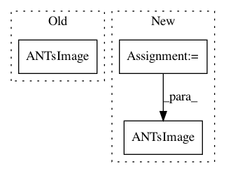

5a408a9109230b4c6898f35589b2a97704e2dce1,ants/utils/channels.py,,split_channels,#Any#,47
Before Change
libfn = utils.get_lib_fn("splitChannels%s%i" % (utils.short_type(img.pixeltype), img.dimension))
itkimgs = libfn(img.pointer)
antsimgs = [iio.ANTsImage(itkimg) for itkimg in itkimgs]
return antsimgs
After Change
>>> len(images_unmerged) == 2
>>> images_unmerged[0].components == 1
inpixeltype = image.pixeltype
dimension = image.dimension
components = 1
libfn = utils.get_lib_fn("splitChannels%s%i" % image._libsuffix)
itkimages = libfn(image.pointer)
antsimages = [iio.ANTsImage(pixeltype=inpixeltype, dimension=dimension,
components=components, pointer=itkimage) for itkimage in itkimages]
return antsimages
In pattern: SUPERPATTERN
Frequency: 3
Non-data size: 3
Instances
Project Name: ANTsX/ANTsPy
Commit Name: 5a408a9109230b4c6898f35589b2a97704e2dce1
Time: 2017-09-24
Author: ncullen.th@dartmouth.edu
File Name: ants/utils/channels.py
Class Name:
Method Name: split_channels
Project Name: ANTsX/ANTsPy
Commit Name: 5a408a9109230b4c6898f35589b2a97704e2dce1
Time: 2017-09-24
Author: ncullen.th@dartmouth.edu
File Name: ants/core/ants_transform.py
Class Name: ANTsTransform
Method Name: apply_to_image
Project Name: ANTsX/ANTsPy
Commit Name: 5a408a9109230b4c6898f35589b2a97704e2dce1
Time: 2017-09-24
Author: ncullen.th@dartmouth.edu
File Name: ants/utils/channels.py
Class Name:
Method Name: merge_channels